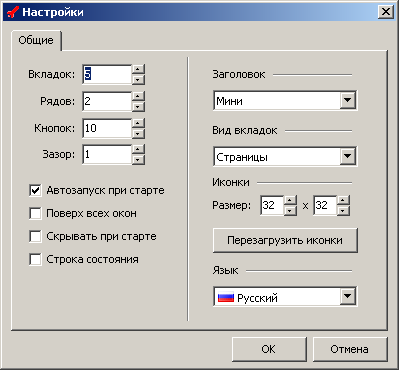

1. Опция "Вкладок"
Определяет количество вкладок в главном окне программы. Имеет ограничение от 1 до 50.
2. Опция "Рядов"
Определяет количество рядов на каждой вкладке в главном окне программы. Имеет ограничение от 1 до 100.
3. Опция "Кнопок"
Определяет количество кнопок в каждом ряду на каждой вкладке в главном окне программы. Имеет ограничение от 1 до 150.
4. Опция "Зазор"
Определяет величину промежутка между кнопками в пикселях. Имеет ограничение от 0 до 5.
5. Опция "Автозапуск при старте"
При включенной опции программа автоматически загружается при старте Windows.
6. Опция "Поверх всех окон"
Если опция включена, то главное окно программы будет всегда находиться поверх всех других окон, запущенных в системе.
7. Опция "Скрывать при старте"
Если опция включена, то после запуска программы главное окно сразу сворачивается в трей.
8. Опция "Строка состояния"
При включенной опции в главном окне программы показывается строка состояния.
9. Опция "Заголовок"
Определяет вид заголовка главного окна программы. Имеет три варианта - нормальный, мини- и отсутствует.
10. Опция "Вид вкладок"
Определяет вид вкладок в главном окне программы. Имеет три варианта - страницы, кнопки и flat-кнопки.
11. Опция "Иконки - Размер"
Определяет ширину и высоту кнопок в пикселях на вкладках в главном окне программы. Имеет ограничение от 16 до 256.
12. Кнопка "Перезагрузить иконки"
Заново загружает иконки программ, расположенных на кнопках, обновляя файл кэша иконок.
13. Опция "Язык"
Определяет язык графического интерфейса программы.
14. Кнопка "OK"
Применение измененных настроек и опций и выход из окна настроек.
15. Кнопка "Отмена"
Выход из окна настроек без применения настроек.